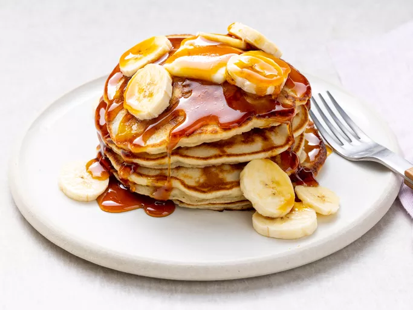

Recipe for Banana Pancakes

Description
An easy meal to make for any occasion, all you need is 8 different ingredients, two bowls, and a pan. Better yet, it can be made in 15 minutes.
Lastly, after it is done you can add any topping, such as syrup, of your choice! That is completley up to you!
Ingredients
- Flour
- Sugar
- Baking Powder
- Salt
- One Egg
- Milk
- Vegetable Oil
- Bananas
Steps
- Take two bowls, mix your flour, sugar, salt, and baking powder in one bowl. Then mix your egg, milk, and vegetable oil in the other bowl.
- Pour one of the bowls into another, resulting in one bowl of ingredients.
- Then stir the bowl up until they are all combined.
- Pour the mix into the pan at 1/4 portions each.
- Medium high heat, cook each side for a few minutes, then flip it to the other side.
- Once both sides are cooked to your liking, take them off the pan.
- Finally add whatever topping you desire.